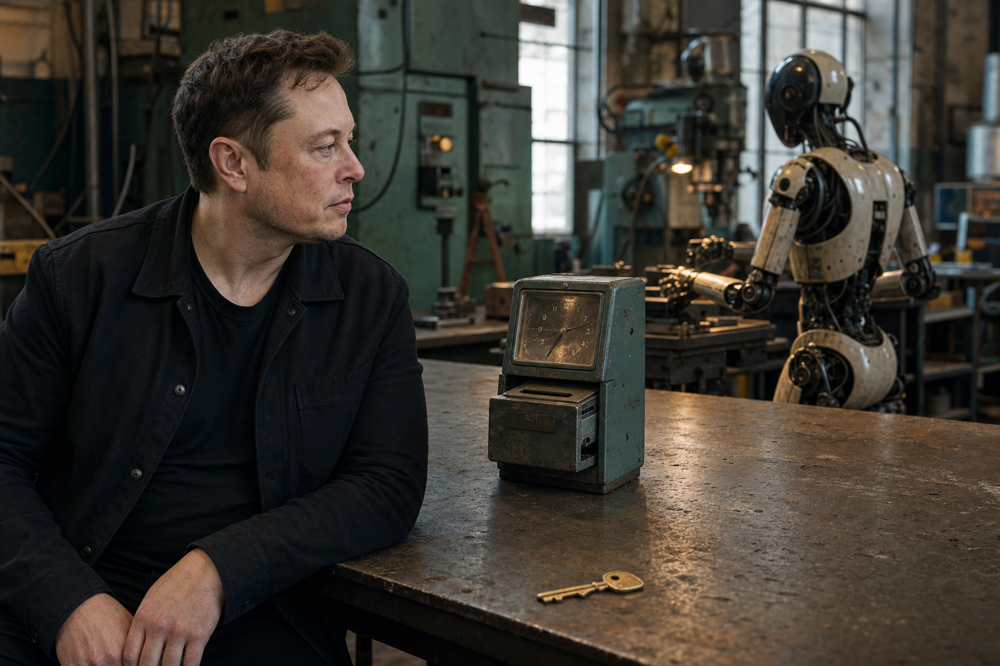

À la une · Économie et IA
Après l’argent : combien d’heures vaut encore le monde ?
Elon Musk imagine un monde où les machines produisent assez pour rendre le travail facultatif et l’argent moins utile.
Mais l’abondance ne fait pas disparaître le logement, l’énergie, la propriété, le pouvoir ou notre besoin d’être utile. L’article mesure ce que le progrès rend réellement moins cher — en heures de vie.
